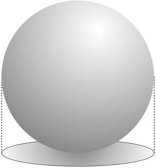

Why should we care about GIS in Economics?
It is not new concept in Economic thought!
[...] if economics profession has notably neglected it [geography], this is not because economists have been uninterested in the subject, but because they have regarded it as intractable.
Source: Fujita, M; Krugman, P and Venables, A., 1999.
So, what's new?
[1] New amazing GIS data sets available out there
provides a original source of variation
Remotely sensed information
(Donaldson and Storeygard, 2016).
access to information difficult to obtain by other means
unusually high spatial resolution
wide geographic coverage
(Vernon Henderson, J.; Storeygard, A. and Weil, D 2012)
Other examples: Henderson et al (2012), Pinkovskiy & Sala-i-Martin (2016), Hodler & Raschky (2014), Michalopoulos & Papaioannou (2013, 2014), Alesina et al (2016), among others.
Historical Maps
recovery old (persistent) characteristics

|
Digitized by Nunn (2008). He found a negative relationship between the number of slaves exported from a country and current economic performance.
Then use by Nunn & Wantchekon (2011), Michalopoulos & Papaioannou (2013, 2014, 2015), Alsan (2015), Alesina et al. (2016), etc.
Geo-Coded individual-level data sets
exploring geography and location as an important dimension

(Duranton, D. and Overman, H 2005) → location patterns of industries in UK
Others examples of geo-coded data sets: .LSMS-ISA (World Bank) -> geo-coded household level 6 African countries
[2] GIS may improve empirical strategy stronger
reducing the omitted-variable bias (I)
gathering more information from neighborhood

|

|
Gibbons, S. and Machin, S (2005) ↑ transport → ↑ house prices
Another nice examples are: (i) Conley & Udry (2010) social learning in the diffusion Ghana ; (ii) Acemoglu, D; Garcia-Jimeno, C. and Robinson (2014) direct and spillover effects of local state capacity in Colombia
reducing the omitted-variable bias (II)
building instruments

Nunn (2008) Current African Countries & Slave Trades
Instrument Slave Export → distances from each African country to the locations where slaves were demanded
New identification strategies
Spatial Regression Discontinuity
Dell (2010) Current African Countries & Slave Trades
Colonial Institutions (Mita) → current outcomes
Exogenous unit of analysis

[3] Provides a new dimensions to gathering micro-level data
Improve your data collection
Most collection data software allows to gather GPS location (e.g. ODK Survey, Survey CTO, CAPI)
Cracking Geo-Spatial Datasets
"Geo-spatial" data
The terms "geo-spatial" refers to information that is located on the earth's surface using coordinates.
"Geo-spatial" data
How can I represent those points, lines, and areas on the surface of the earth?
Geodetic Location
Latitude → north-south direction, relative to the equator
Longitude → east-west direction, relative to an arbitrary point (typically the location of the Royal Observatory in Greenwich - England)
... yet earth is not a perfect sphere, it is more like an oblate spheroid.
The mathematician Carl Gausse proved that it is mathematically impossible to project $R^3$ shape (e.g. sphere), onto a flat plane without introducing some sort of distortion.
What should we do?
... we need to choose a distortion that fits your needs
Cylindrical Projections
It include the Mercator Projection, the Equal-Area Cylindrical Projection, and the Universal Transverse Mercator Projection.
Conical Projections
It includes the Albers Equal-Area, the Lambert Conformal Conic Projection, and the Equidistant Projection.
Azimuthal Projections
|  |
It includes the Gnomonic Projection, the Lambert Equal-Area Azimuthal Projection, and the Orthographic Projection.
Coordinate System
.. still something missing
yet, we said that the earth is not a perfect sphere
Datum is a mathematical model of the earth used to describe locations on the earth's surface. A datum consists of a set of reference points, often combined with a model of the shape of the earth.
Most common datum: NAD 27, NAD 83 and WGS 84
"Geo-spatial" data
How can I represent those points, lines, and areas on the surface of the earth?
Vector Data
|
|
Point $(lat,lon)$ | Linestring | Polygons | Polygons |
Raster data (images as data)
Geo-located map set
Pixel characteristics as main attribute
Classified (Remote sensitive data)
Raster Data
Raster Data
Polygons
Polygons
Linestring
Point
"Geo-spatial" data
GIS data format
Getting geo-spatial dataset into a file (s)
Many formats available
micro-format (WKT,GeoJSON,...)
Shapefile developed by ESRI
| .shp | it contains the geometry (type) |
| .shx | fixed size |
| .dbf | attributes (data base) |
Other files such as: .prj(projections)...
Same file name, yet different extensions
GIS tools
C, C++ and Python based solutions (objected-oriented syntaxis)

|
Source: Lawhead, 2013
Point

ArcGIS
- Commercial Software
- Pre-defined python package - ArcPy (+ Model Builder)
- Memory demanding; Windows only
QGIS
- Open source software; easy to create map images;
- Pre-defined python package - PyQGIS
- compatible with any OS (even android)
Standalone solutions